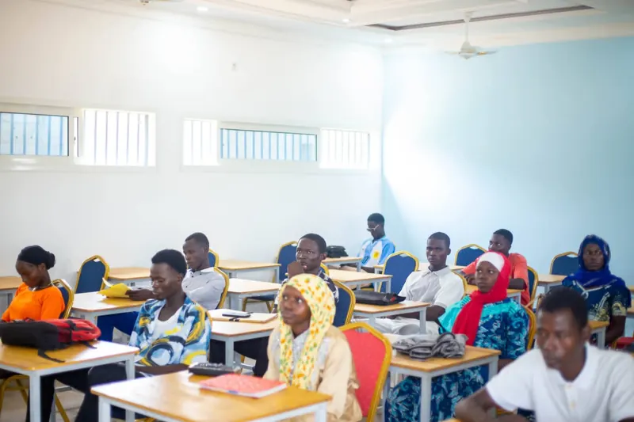
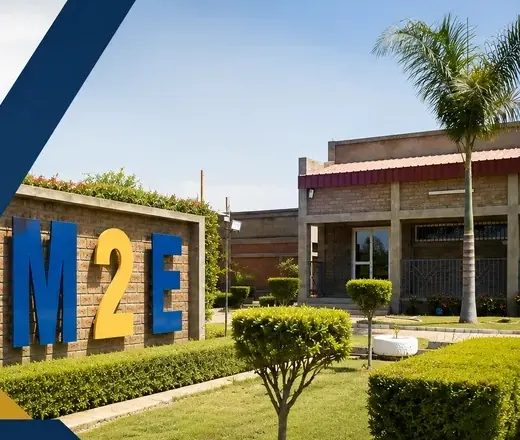
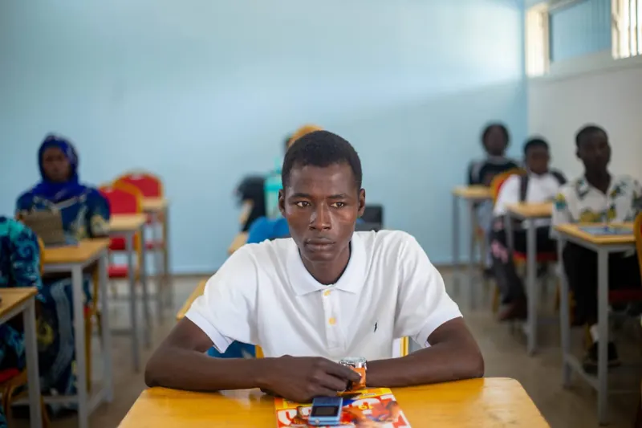

Génie civil
Concevoir, calculer et réaliser les bâtiments et infrastructures qui façonnent nos villes.
Découvrir la filièreUne école d'excellence à N'Djamena pour former les ingénieurs, techniciens et professionnels dont le Tchad a besoin — par la pratique et pour l'emploi.


M2E École Polytechnique accueille les bacheliers et les professionnels qui veulent acquérir des compétences solides et directement utiles sur le marché du travail.
Implantée au quartier Digangali, dans le 9e arrondissement de N'Djamena, l'école réunit cinq filières — du génie civil à la nutrition — autour d'une même conviction : on apprend un métier en le pratiquant.
Choisis le domaine qui te ressemble. Chaque filière est construite autour de compétences concrètes et de débouchés clairement identifiés.
Concevoir, calculer et réaliser les bâtiments et infrastructures qui façonnent nos villes.
Découvrir la filièreDévelopper, connecter et sécuriser les systèmes numériques dont dépendent les organisations.
Découvrir la filièreFormer les acteurs d'une agriculture productive, durable et entrepreneuriale.
Découvrir la filièreInformer, convaincre et piloter l'image des organisations, du terrain au digital.
Découvrir la filièreAgir sur la santé des populations par l'alimentation et la prévention.
Découvrir la filièreLes inscriptions sont ouvertes dans les cinq filières. Ne laisse pas passer ta chance : prépare ton avenir dès aujourd'hui.
Ce qui fait la différence pour nos étudiants, au quotidien.
Une pédagogie tournée vers le concret : exercices appliqués, travaux pratiques et mises en situation proches du métier.
Des programmes construits autour des compétences attendues par les employeurs dans chaque domaine.
Chaque filière est pensée à partir de débouchés métiers clairement identifiés.
Ingénierie, numérique, agronomie, communication et santé : un même campus, des profils variés.
Espaces verts, salles de cours lumineuses et un nouveau bâtiment en construction pour accueillir plus d'étudiants.
Un campus accessible au quartier Digangali, dans le 9e arrondissement.

Bientôt ici : les parcours et les mots de nos étudiants et diplômés.
Vous êtes étudiant ou ancien étudiant de M2E ? Partagez votre expérience : votre témoignage pourra être publié sur cette page avec votre accord.
Ne laisse pas passer ta chance. Dépose ta candidature en ligne en quelques minutes ou contacte directement le service des admissions sur WhatsApp.